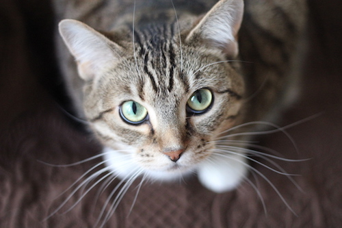
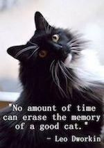

Welcome to the Kitty Corner!
This site is a educational source for cat lovers, haters, prospective owners, and anyone hoping to learn more about these amazing animals.
Why should you adopt a cat?
Cats are a domesticated animal that have been a part of human lives for thousands of years. They are largely self-sufficient. They bathe themselves, can be litter box trained, and if they're outdoor cats they will be happy to keep to themselves. Although they're known for being independent and sometimes sly, cats can still be wonderful cuddle buddies and sweet companions.
Cats are largely nocturnal, like their big cat ancestors, and sleep 16-18 hours a day. They come in varieties of coat colors, temperaments, and sizes, though with not quite as much distinction between breeds as the dog.

List of current top ten cat breeds in the US:
- Persian
- Ragdoll
- Exotic Shorthair
- Siamese
- Abyssian
- Maine Coon
- Birman
- American Shorthair
- Oriental
- Sphynx